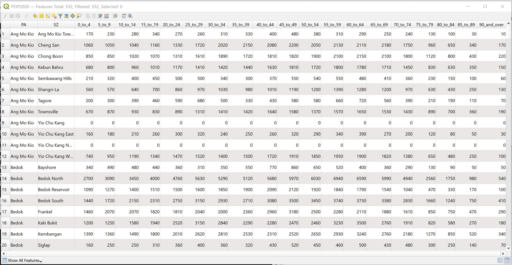
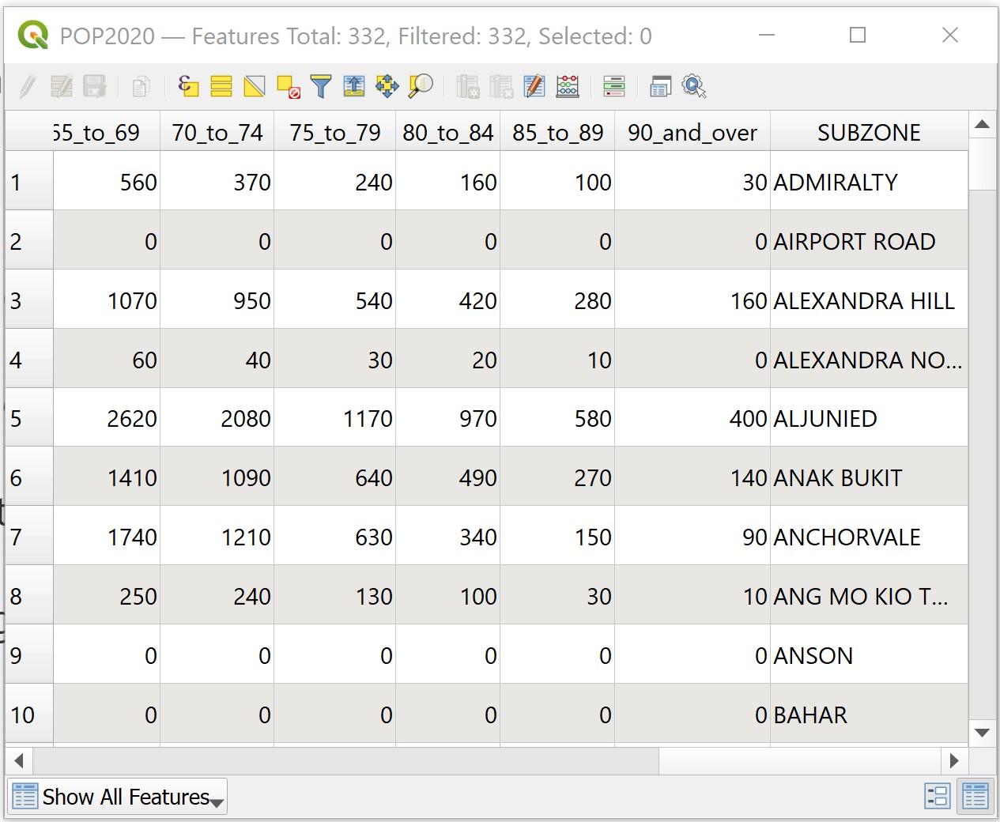
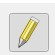
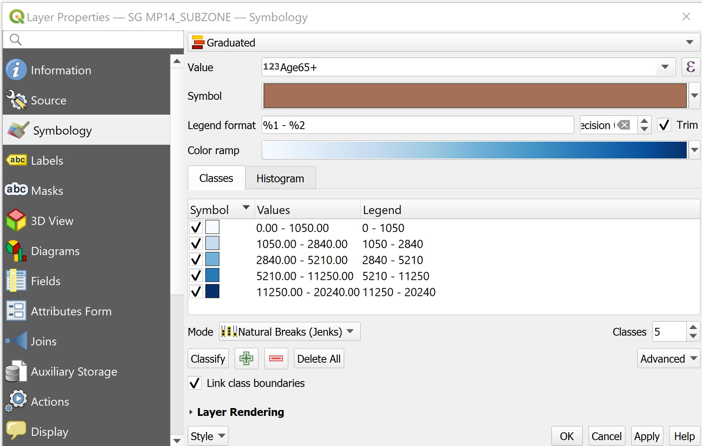

4 GIS Mapping and Geovisualisation
In this exercise, you will learn how to prepare qualitative and quantitative thematic maps using QGIS. You will also learn how to create a joint table by using the concept of georelational data model of GIS.
4.1 Learning Outcome
By the end of this session, you will be able to:
- prepare qualitative maps,
- create proportional symbol map,
- perform georelational join,
- Compute new field from existing fields, and
- prepare choropleth map.
4.2 Data
For the purpose of this hands-on exercise, three data sets are provided. They are:
educationprovides general information of public primary schools, secondary schools and junior colleges. This data set was downloaded from Data.gov.sg and geocoded by using SLA OneMap Api.sgpoolsprovides information of SG Pools outlets and stores information.POP2020provides population by age group as at June 2020. It is downloaded from Department of Statistics (DOS), Singapore. The data set provides multiple years of population data. For the purpose of this exercise, only 2020 data were extracted.
These three data sets are in csv file format. They can be found in DataTables of Hand-on-Ex03 folder.
Besides the above three data sets, you are required to download the following geospatial from public web sites:
National Map Polygonfrom Data.gov.sgMaster Plan 2014 Subzone Boundary (No Sea)from Data.gov.sgRoad Section Linefrom LTA Data Mall
4.2.1 Data Preparation
DIY: Using the steps you had learned from the previous hands-on exercise, convert the education and SGPools data sets in DataTables folder into geospatial data layer and store them into an integrated database called
SG. The geospatial database must be in GeoPackage format.
DIY: Using the steps you had learned from the previous hands-on exercise, convert the geospatial data sets downloaded from Data.gov.sg and LTA Data Mall into the newly created
SGdatabase.
4.3 Getting Started
DIY: Launch QGIS. Create a new project call
Hands-on_Ex03. Provide the project with a correct referencing system.
DIY: Using the steps you had learned from the previous hands-on exercies, import all the geospatial data in
SGdatabase into the newly created QGIS project.
DIY: Using the steps you had learned from the previous hands-on exercise, add OSM map layer into
Hands-on_Ex03project.
Your screen should look similar to the figure below.

4.4 Symbolising Qualitative GIS Data Layers
In this section, you will learn how to symbolise GIS data layers by using their corresponding qualitative data values.
4.4.1 Symbolising education GIS layer
The type_code field of Education layer provides us the school type information. In this section, you will learn how to use this field to symbolise education layer.
- At Layers panel, click on
Educationlayer to make it active. - Right-click on
Educationand select Properties from the context menu.
The Layer Properties dialog window appears.
- Click on the Symbology tab.
Your screen should look similar to the screenshot below.

- Select Categorized from the Symbol drop-down list.

- For Value, select mainlevel_code from the drop-down list.

- Click on the Classify button.
Your screen should look similar to the screenshot below.

Figure above shows that Education layer has been categorised into five categories. They are, Junior College, Centralised Institute, Mixed Levels, Primary and Secondary.
Next, you will learn how to symbolise them by using the svg vector symbol set.
- Double-click on the marker in front of JUNIOR COLLEGE.
The Symbol selector dialog window appears.

From Marker, click on Simple marker.
For Symbol layer type, select SVG maker from the drop-down list.
Scroll down the dialog window until you can see the SVG Browser as shown below.

- From the SVG Image, scroll-down and click on
 .
.
DIY: Change the size value and fill colour and observe the differences.
- When you are done, click on the OK button.
You will return to Layer Properties dialog window.
DIY: Using the step you had learned, change the symbols of the remaining four categories in mainlevel_code field.
When you are done.
- At the Layer Properties dialog window, click on Apply button to update the changes.
- To close the Layer Properties dialog window, click on OK button.
Your screen should look similar to the figure below.
This map is popularly known as Point symbol map among the GIS and cartography communities. Prior to GIS era, this kind of map took more than a month to prepare. With GIS, it only needs less than 15 minutes to prepare. The advantage of GIS-based point symbol map is that the map can be changed easily with very little effort. GIS-based point symbol map is also highly interactive. You can navigate around the digital map and zoom in to view the distribution in greater details.
DIY: Use the steps you had learned from the previous section, symbolise the
Challenge: Using the steps you had learned in the previous section, symbolise RoadSectionLine layer according to Expressway and Roads.
Challenge: Using the steps you had learned in the previous section, symbolise National Map Polygon layer to show the outlines only.
Your screen should look similar to the figure below.
4.5 Creating Proportional Symbol Map
Proportional symbol maps (also known as graduate symbol maps) are a class of maps that use the visual variable of size to represent differences in the magnitude of a discrete, abruptly changing phenomenon, e.g. counts of people. Like choropleth maps, you can create classed or unclassed versions of these maps. The classed ones are known as range-graded or graduated symbols, and the unclassed are called proportional symbols, where the area of the symbols are proportional to the values of the attribute being mapped.
In this section, you will learn how to create a proportional symbol map showing the numbers of win by Singapore Pools’ outlets.
DIY: Before we get started, let us switch off
Education,RoadSectionLineandSGOutlinelayers.
Your screen should look similar to the figure below.

Before you start to prepare the proportional symbol map, you will take a look at the attribute table of SGPools layer.
- At the Layers panel, right-click on
SGPoolslayer. - Select Open Attribute Table from the context menu.
Your screen should look similar to the figure below.

You are going to use the values in the last filed (e.g Gp1Gp2Winn) to create a proportional symbol map.
- Close the table by clicking on the cross icon located at the upper right corner of the table.
Next, you are going to change the size of the point symbol by mapping the values in Gp1Gp2Winn field.
- At the Layers panel, right-click on SGPools layer.
- Select Properties from the context menu.
The Layer Properties dialog window appears.
Click on the Symbology icon.
For Value, select Gp1Gp2Winngs from the dropdown list.
For Method, select Size from the drop-down list.
For Size to, type 10.
Click on Classify button.
Your screen should look similar to the figure below.

When you are ready,
- Click on Apply button to update the changes.
In order to view the changes, you need to close the dialog window.
- Click on OK to close the Layer Properties dialog window.
Your screen should look similar to the figure below.

Notice that there are many proportional symbols were overlapping. Now, you will learn how to use the layer transparent feature of QGIS to improve the visualisation.
DIY: Using the step you had learned in the earlier section, open the Layer Properties of
SGPools.
- At the Layer Properties panel, look for Layer rendering sub-panel located at the bottom ot the dialog window.
- Click on the little triangle in front of Layer rendering sub-panel.
The Layer rendering subpanel extended as shown in the figure below.

- For Opacity, type 80%, alternatively, you can use slider to slide toward the left until it reaches 80%.
To update the changes,
- Click on Apply button.
Lastly,
- Click on OK button to close the dialog window.
Your screen should look similar to the figure below.
• Feel free to explore other configurations. When you are done, click on the OK button.
4.6 Choropleth map using GIS
Choropleth mapping involves the symbolisation of enumeration units, such as countries, provinces, states, counties or census units, using area patterns or graduated colors. For example, a social scientist may need to use a choropleth map to portray the spatial distribution of aged population of Singapore by Master Plan 2014 Subzone Boundary.
The major concerns of choropleth mapping are the method of data classification, areal symbolization, and the overall map design. General rules for choropleth mapping are as follows:
- Use data that are assumed to be uniform throughout an enumeration unit.
- Because enumeration units vary in size, do not map totals. Use derived values, such as ratios, rates, proportions, or percentages.
- The best classing method depends on the data, the map reader and the purpose of the map.
- When classifying data, the full range of data must be included and class values should not overlap. No more than six classes are recommended.
- Class symbols (i.e. colors or patterns) must be easily distinguishable.
In this section of the hands-on exercise, you will learn how to use QGIS to prepare a choropleth map showing the distribution of population with age 65 and above in Singapore by URA’s Master Plan 2014 subzone. You will also gain hands-on experience on the various data classification methods, symbolisation and map layout design techniques offered by QGIS.
4.6.1 Adding geoadministrative layer
DIY: Using the steps you had learned from the previous section, add
Master Plan 2014 Subzone Area Boundary (No Sea)layer into QGIS.
Your screen should look similar to the figure below.

4.6.2 Adding an attribute table in QGIS project
Now, you will add the POP2020.csv table into the QGIS project. It is stored in \Hands-on_EX04\DataTables folder and is in csv format.
- From the Layers toolbar, click Add Layer -> Add Delimited Text Layer ….
The Data Source Manager|Delimited Text dialog window appears.

- At File Name, click on Browse button at the back.
The Choose a Delimited Text File to Open dialog window appears.
• Navigate to -on_Ex04sub folder.

- Click on
POP2020.
- Click on the Open button.
You will return to Data Source Manager|Delimited Text dialog window.

Notice that the dialog window is completed with many information and a preview table.
- For Geometry definition, click on the radio button in front of No geometry (attribute only table).
- Click on Add button.
Notice that a new data layer called POP2020 has been added in the Layers panel.
We will close Data Source Manager|Delimited Text dialog window.
- Click on OK button.
Next, you will examine the structure of the data.
• Right-click on POP2020, select Open Attribute Table.
The Attribute table dialog window appears.

4.6.3 Creating relational join
Now you are ready to perform relational join between the MP14_SubZone GIS layer and the POP2020 attribute layer.
In order to join the attribute table of a geospatial data and an aspatial attribute table, we need to identify the common key or popularly known as unique identifier between these two data sets.
DIY: Using the steps you had learned, open the attribute table of MP14_SubZone and POP2020.

With reference to the tables above, the SZ field of POP2020 and SUBZONE_N field of MP14_SUBZONE can be used as the unique identifier filed. However, if you examine the data carefully, there is a problem we should take note of. That is strings in SUBZONE_N are all uppercase. On the other hand, strings in SZ field are made up of upper- and lowercases.
In view of this problem, we will create a new field to change strings in SZ into uppercase. We will call the output field SUBZONE.
- At the POP2020 Feature Table, click on Open field calculator icon

The Field Calculator dialog window appears.
- For Output field name, type SUBZONE.
- For Output file type, select Text(string) from the drop-down list.
- At the Expression panel, type as shown below.

Best practice: This is always a good practice to check the preview to ensure that the result is inline to what you want.
- Click on OK button when you are ready.
Notice that a new field called SUBZONE has been added into POP2020 data table the strings are all in uppercase.

You are ready to join both tables now.
- From the Layers panel, double-click on MP14_SubZone vector layer.
The Layer Properties dialog window appears.
• From the Tab menu, click on the Joins tab.
Your screen should look similar to the figure below.

- Click on Add new join icon

The Add Vector Join dialog window appears.
- For Join Layer, select
POP2020from the drop-down list. - For Join field, select SUBZONE from the drop-down list.
- For Target field, select SUBZONE_N from the drop-down list.

- Click on OK button to perform the relational join.
You will return to the Layer Properties dialog window.
Notice that a relational joined between POP2020 attribute table and the attribute table of MP14_SubZone has been created.
- At the Layer Properties dialog window, click on the OK button.
Strange, it seems that nothing had happen!
• At the Layers panel, right click on MP14_SubZone layer and select Open Attribute Table from the context menu.
You will notice that the table now contains additional fields from POP2020 attribute layer.

Remember that this joint is temporary. It is not part of the attribute table of MP14_SubZone layer, but is just linked dynamically to the POP2020 attribute layer. If you want to permanently join the attributes, you must save it as a new layer.
4.6.4 Creating a choropleth map
In this section, you will learn how to create a choropleth map showing the distribution of population age 65 and above by URA’s Master Plan 2014 subzone area.
First, you will create a new field called Age65+ and compute its value by using the calculator function of QGIS.
- From Layers Panel, right-click on
MP14_SubZone, select Open Attribute Table from the context menu.
The MP14_SubZone attribute table appears.
- Click on Open Field Calculator icon .
The Field calculator dialog window appears.
- Keep Create a new field box check.
- For Output filed name, type Age65+.
- For Output field type, select Whole number (integer) from the drop-down list.
- At the Expression panel, build a formula as shown below.

Gentle reminder: Check the preview to ensure that the result is what you want.
To perform the computation,
- Click on the OK button.
Notice that a new field called Age65+ has been added into the attribute table of MP14_SubZone table.

Before you end this session, you need to save the results into the attribute table permanently.
- From the icon bar, click on the Toggle editing mode icon .
The Stop Editing dialog appears.

- Click on Save button.
- Close the attribute table of
MP14_SubZonelayer.
You are ready to prepare the choropleth now.
- From the Layers panel, double-click on MP14_SubZone layer.
The Layer Properties dialog window appears.
- Click on Symbology tab.
- At Symbol selection drop-down list, select Graduated from the drop-down list.
- For Value, select Age65+ from the drop-down list.
- For Classes, keep it as 5.
- For Color ramp, choose Blues or any colour of your choice from the drop-down list.
- For Mode, choose Natural Breaks (Jenks) from the drop-down list. • Click on Classify button.
Your screen should look similar to the figure below.

You can review the statistical distribution of the classification in histogram.
- Click on the Histogram tab.
- Click on Load values button.
Your screen should look similar to the figure below.

This feature is very useful for casual data analyst because the histogram helps us to understand the differences of each classification method.
- Click back Classes tab.
- Click on Apply button.
- Click on the OK button.
Your screen should look similar to the figure below.

Challenge: Study the distribution revealed by the choropleth map. Can you identify planning subzones with high concentration of population with age 65 and above? Do these subzone tend to clusters together or randomly distributed?
DIY: Using the steps you had learned from the previous sections, create a choropleth maps of percentage of population age 65 and above.
Challenge: Compare the two choropleth maps prepared, what conclusion can you draw from the maps?